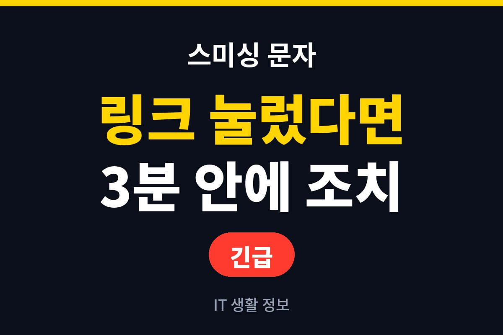
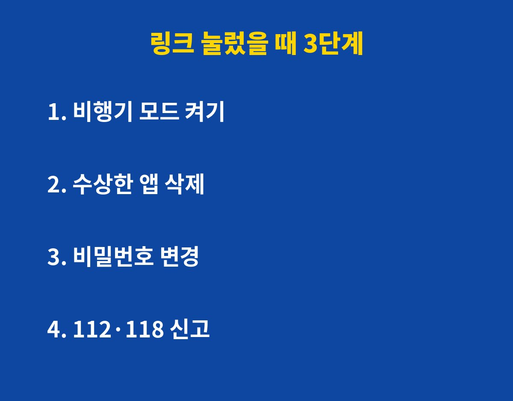
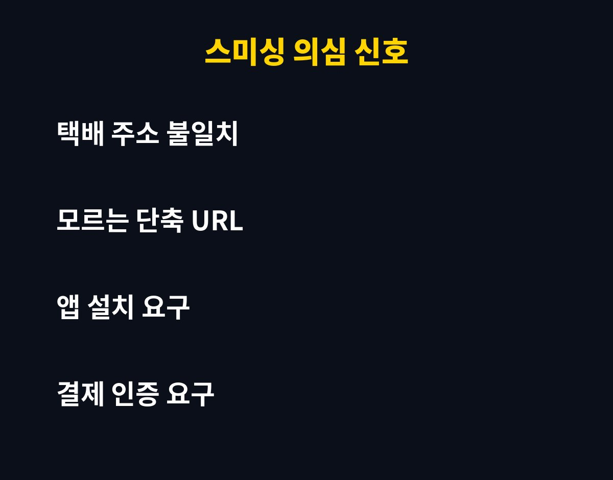

스미싱 문자 링크를 눌렀다면, 가장 먼저 할 일은 인터넷 연결 차단과 수상한 앱 삭제예요. 택배·부고·청첩장 문자를 받고 무심코 눌러본 분이라면 꼭 보세요. 그런데 링크만 눌렀다면 오히려 안전할 수 있어요. 이유는 아래에 있어요.
스미싱 링크, 눌렀다고 다 털릴까요?
결론부터 말하면 링크를 누르는 것만으로 바로 돈이 빠져나가는 경우는 드물어요. 문제는 그다음이에요. 링크를 누르면 가짜 사이트로 연결되고, 거기서 앱 설치나 본인 인증, 개인정보 입력을 유도해요. 이 단계에서 따라가지 않았다면 피해 가능성은 크게 줄어요.
반대로 앱을 설치했거나 이름·주민번호·카드번호를 입력했다면 이야기가 달라져요. 악성 앱은 문자와 통화 내용을 엿보고, 금융 앱 화면을 가로챌 수 있어요. 그래서 어디까지 진행했는지가 제일 중요해요.

눌렀다면 지금 당장 할 3가지, 순서가 있다고요?
1단계, 비행기 모드를 켜세요. 악성 앱이 외부로 정보를 보내는 길부터 막는 거예요. 와이파이도 같이 꺼주세요.
2단계, 수상한 앱을 지우세요. 최근에 설치한 앱 중 내가 모르는 앱이나 이름이 이상한 앱이 있으면 삭제하세요. 삭제가 안 되면 설정에서 기기 관리자 권한을 먼저 해제해야 해요.
3단계, 다른 기기에서 비밀번호를 바꾸세요. 감염이 의심되는 폰이 아니라 PC나 가족 폰으로 포털, 금융, 간편결제 비밀번호를 바꿔야 해요. 그 폰에서 바꾸면 새 비밀번호도 새어 나갈 수 있어요.
이런 문자는 100% 의심해야 한다던데, 어떤 건가요?
| 문자 유형 | 의심 포인트 | 올바른 대응 |
|---|
| 택배 배송 문자 | 주문한 적 없는 택배, 주소 불일치 | 택배사 공식 앱에서 직접 조회 |
| 부고·청첩장 | 모르는 번호, 단축 URL | 당사자에게 전화로 확인 |
| 카드·결제 승인 | 쓰지 않은 결제, 취소 링크 | 카드사 앱·고객센터로 직접 확인 |
| 정부·공공기관 사칭 | 환급금, 과태료 링크 | 공식 홈페이지 주소를 직접 입력 |
공통점은 "링크를 누르게 만든다"는 거예요. 공식 기관은 문자 속 링크로 앱 설치나 계좌 입력을 요구하지 않아요.

이미 입력했다면, 어디에 신고하나요?
금전 피해가 의심되면 바로 112 또는 금융회사 고객센터에 연락해 지급정지를 요청하세요. 시간이 곧 돈이에요. 스팸·스미싱 문자 자체는 118 상담센터에서 안내를 받을 수 있어요. 피해 문자 화면과 통화 기록은 지우지 말고 캡처해 두세요.
예방도 간단해요. 모르는 출처의 앱 설치를 막아두고, 스팸 차단 기능을 켜고, 휴대폰 소액결제 한도를 필요한 만큼만 설정해 두면 피해 가능성이 확 줄어요. 가족 중 어르신이 있다면 이 글을 꼭 공유해 주세요.
도움이 되셨다면 구독해 주세요. 생활에 바로 쓰이는 IT 정보를 계속 전해드릴게요.
기사·공식 발표 기준이며 출시·가격 정보는 바뀔 수 있어요.